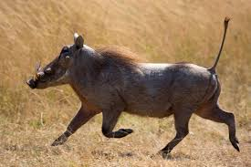

|  | Warthogs are widely distributed across Kenya, with two species present: the common warthog (Phacochoerus africanus) and the desert warthog (Phacochoerus aethiopicus). While the common warthog can be found in many national parks and reserves, the desert warthog has a more limited range. |